goodalexander
goodalexanderWhiplash. DeepSeek, Inference is Over. SpaceX $1T Guide (We're Back)
Simply - near term after SpaceX and SMCI we see a sigh of relief on GPU economics and then are left with the Fable 5.5 launch to answer the question re the token flood (TBD).

The 2 trillion dollar questions in markets are
- will Anthropic and OpenAI be able to manage a decelerating inference story amidst a DeepSeek driven token flood?
- Will GPU economics break down structurally in a manner that results in a credit event for CoreWeave, Neolabs and/or Oracle?
TLDR: Simply - near term after SpaceX and SMCI we see a sigh of relief on GPU economics and then are left with the Fable 5.5 launch to answer the question re the token flood (TBD).
The Token Flood is Coming into a Saturated Inference Market
Due to Deepseek's open sourcing of its kernels, there is going to be a token flood bc GPU rental economics are too good. DeepSeek 4.1 Flash is good enough that this will place pressure on already decelerating Anthropic inference business forcing a story change into "so much more than inference" (ala curing cancer etc) and lower churn revenue (enterprise transformation). Meanwhile Elon is going berserk building data center capacity, planning for Superintelligence saying that there is no demand shortage for compute. SpaceX numbers combined with SMCI pre-announce should result in big short term sigh of relief that likely outweighs 'deepseek moment' narrative for the moment.
That said - there are a series of concerning decelerations in inference data tracking
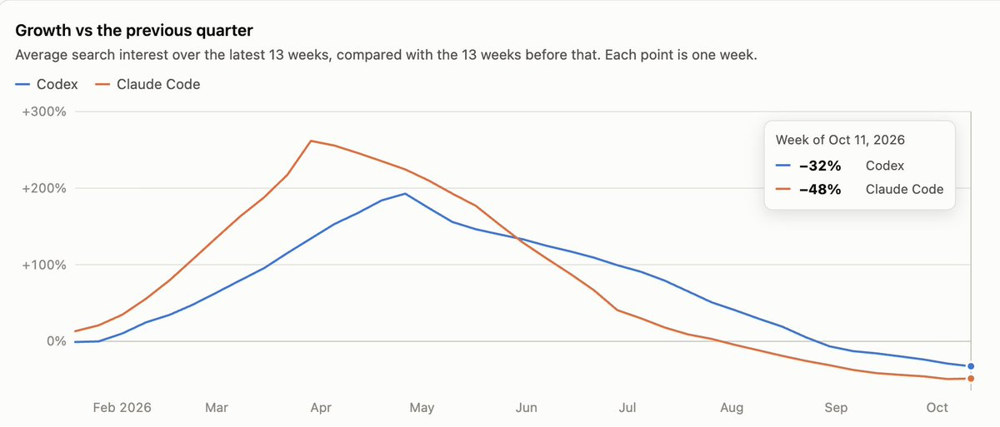
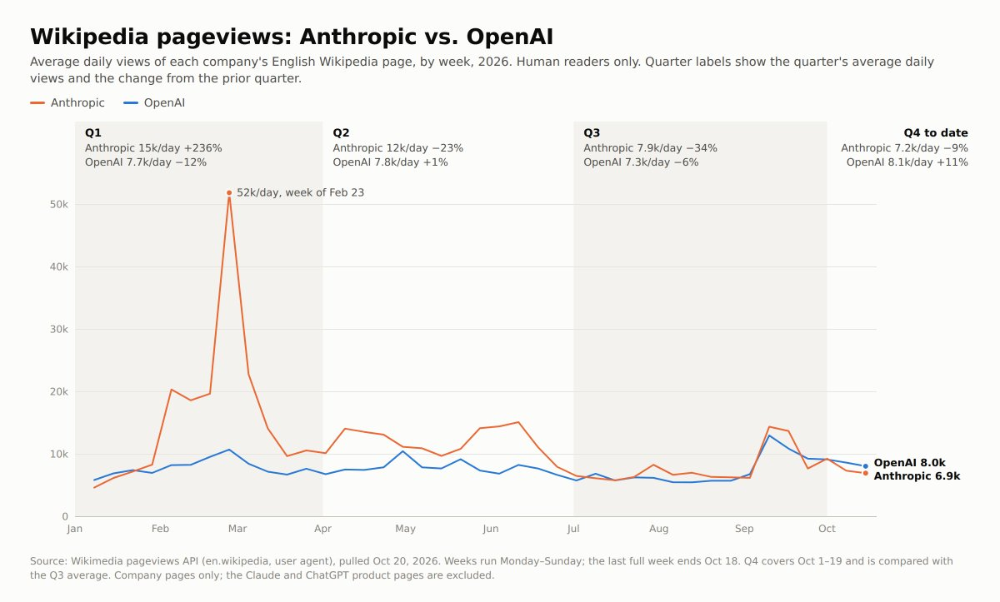
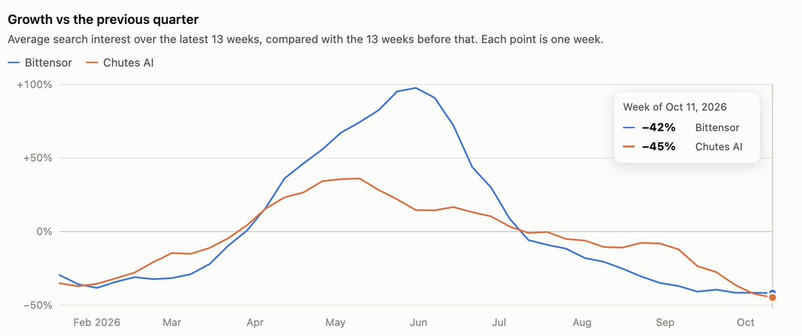
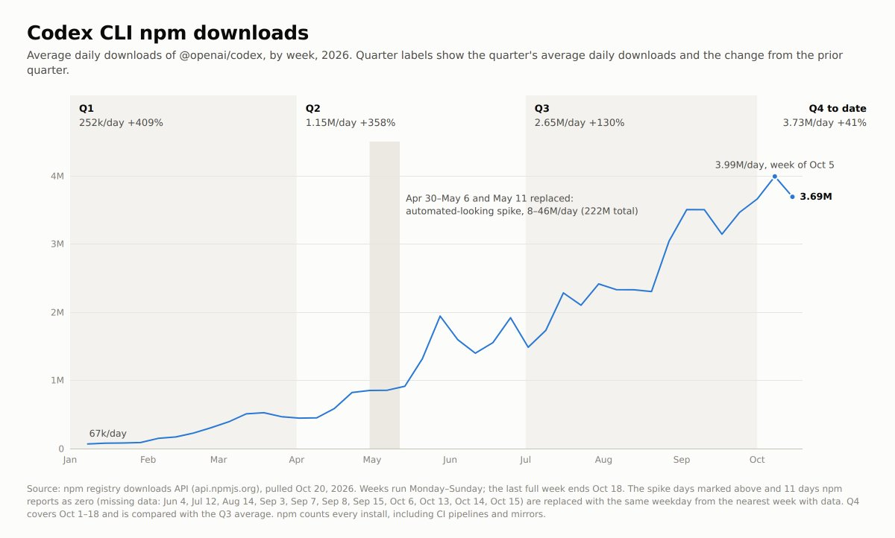
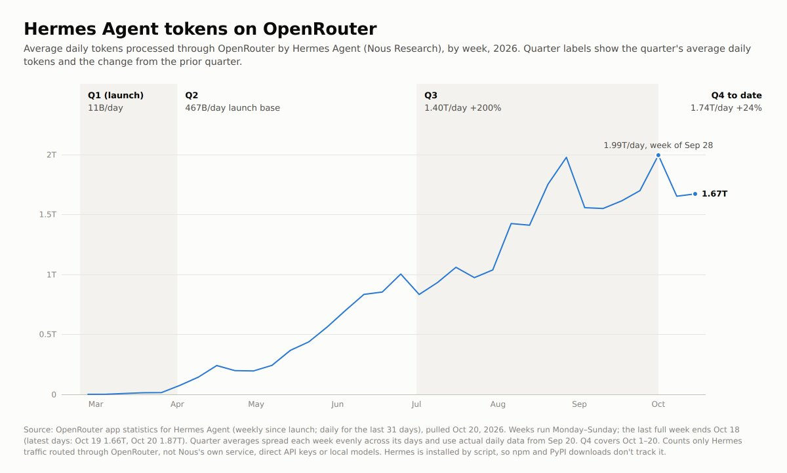
Huawei partnering with DeepSeek launching chips is a competitive headwind for semiconductor stocks, but the 10/17 Deepseek Flash 4.1 release with full kernel open source documentation that came yesterday strongly improves *market perception* of short term economics of GPU rentals and lowers credit risk for $CRWV and $ORCL chip backed lenders. The resulting likely token flood raises the bar for Fable 5.5 and OpenAI model launches. - so with OpenAI as the primary credit risk for CRWV and ORCL, it's somewhat of a mixed bag. Palantir $PLTR likely benefits as it America-washes Chinese models for corporate and government clients
The predictable near term narrative driver is that Dario Amodei is going on an IPO road show in the wake of government deepseek bans and is going to focus everyone on the danger of abliterated models hacking everyone (with safety controls removed) - serving as a tailwind to cyber stocks which I cover later. OpenAI and Anthropic will lobby the US government to ban Deepseek. Anthropic will be forced to tell a story about how "AI isn't just inference". Which is why they had Citrini develop / market a scorpion anti venom. $ARKG genomics ETF should trade well into the IPO roadshow as the "if Anthropic is $1.8 Trillion why not pay $20b for this biotech play". Fable 5.5 tells us if RSI is a viable story or not so is an important catalyst
SpaceX also moves the bar higher for growth expectations as its Q1 2027 guide has 600% yoy growth primarily driven by compute. Anthropic is trying to change the story to "maybe we don't grow as fast but we're curing cancer"
Meanwhile after Anthropic's Q3:
A bit of a mixed signal.
Focus on DeepSeek memory efficiency is a mild negative for the memory sector which is already under pressure- but the launch of more Huawei chips is a positive for CXMT which has been smoked this month due to disappointing guidance
Trades:
- Long $XMR - hacking narrative will accelerate into Dario's IPO roadshow. Long $ARKG as Anthropic flails for non inference story. If Fable 5.5 is bad, puts on Nasdaq
- Picture on CRWV and ORCL is mixed, mildly positive after SpaceX and SMCI. Pressure on OpenAI / Labs due to DeepSeek and the coming token flood is offset by improved credit risk of GPUs which have high ROIs. If Fable 5.5 is bad I will sell ORCL and CRWV bonds but right now I'm optimistic and holding
- NBIS, IREN and Elice (the Korean Data Center that everyone was gravedancing) should benefit. Elise just ran 30%
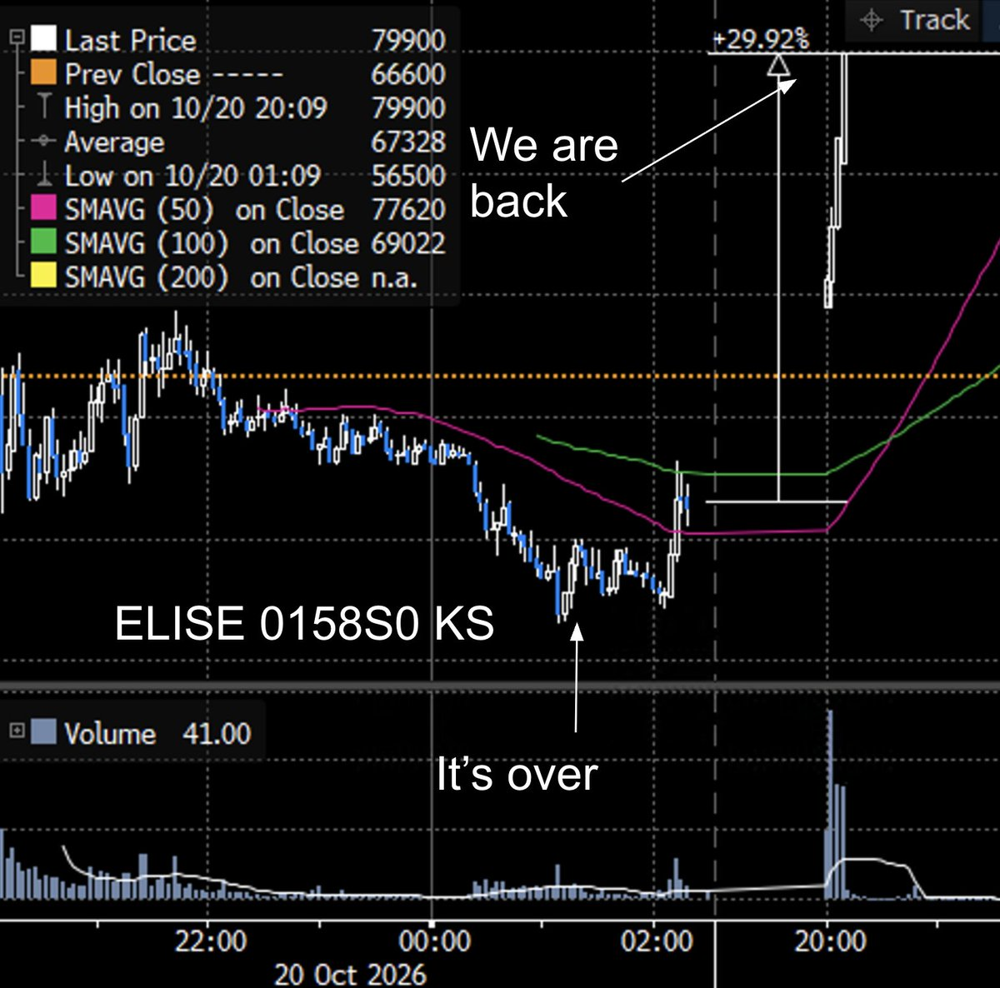
- DeepSeek / Huawei partnership makes Q1 launch date a clear catalyst for Chinese cloud story (names at bottom of article - not positioned need to ramp up). Huawei becoming an Nvidia competitor is a big trend to position for
- Flip side: hard to construe the current market dynamics as positive for the labs. The picture is Anthropic paying Elon for compute into an onslaught of DeepSeek compute and saying "look at Citrini's Scorpion vaccine".
- Accelerating open source capability is bad for software. Additional pressure on labs means there's more incentive to in-house software. A simple basket of $CQQQ and short $IGV is a good placeholder for now as I dig into single named shorts
Q1: What is the DeepInfer drop? Does it matter to asset prices?
Deepseek 4.1 flash is the #1 open source model and subject of government guidance which recently banned its use in govt agencies. DeepInfer is best described as Deepseek's own internal open source methodology to most efficiently serve 4.1. Rough estimates would be 1.6x more output per GPU at interactive speeds, and about half the compute to read input. Meaning DeepInfer helps GPU provider's cost per token falls by 35-50% depending on some assumptions. That means rental ROI goes up.
DeepInfer does not include training methodology. It matters because it changes peoples ROI calculations on GPUs which were under question with the CRWV crash, and builds hype into the Huawei Ascend chip launch (which definitely matters). Pragmatically you need 128 blackwell GPUs and SSD storage to fully utilize it. Cache storage system, load balancers and prefill/decode split aren't included. It's not an overnight revolution or a deepseek moment. I'd frame it more as a sigh of relief for GPU ROI panicans. Neolabs without OpenAI exposure should trade especially well
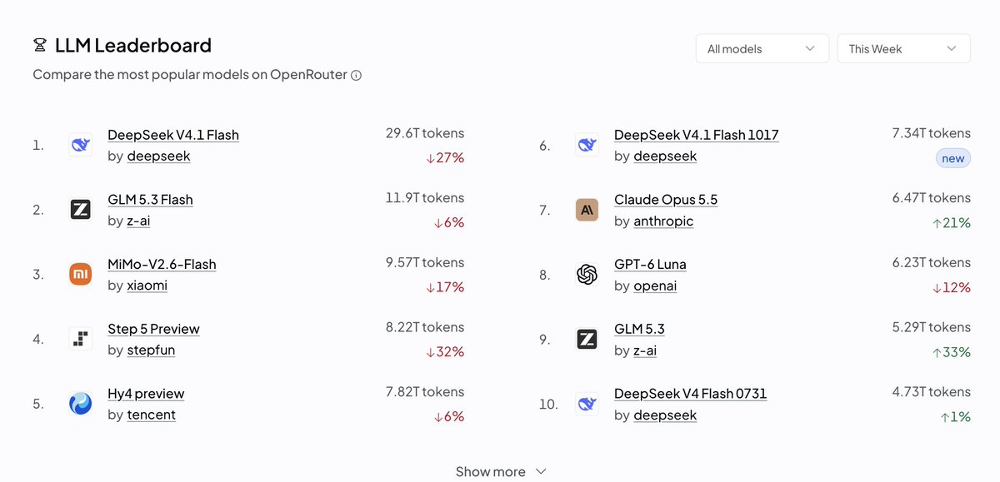
Long story short via asset price implications - there are three factors here.
First, BULLISH ON CHINESE SEMIS / CLOUD AND BEARISH ON US DUE TO COMPETITIVE ENVIRONMENT DeepSeek and Huawei are launching and Nvidia competitor (bad) - focused on training by Q4 (confirmed by DeepSeek Founder Liang Wenfeng in his raise) and shipping by Q1. the recent DeepInfer drop *does not include training* so that's worth mentioning - it's not a now thing (though it's close). The DeepInfer drop is more relevant to architecture selections
Second [bullish] GOOD FOR RENTS BECAUSE UNIT ECONOMICS GOOD - at current prices/ efficiency levels from Deepseek's DeepInfer drop - the ROI on GPUs is ridiculously good. Per my previous CRWV article the question is can you justify paying higher rents. The answer is clearly yes. At DeepSeek $38 / rent you get a 4-5x return on a 3-6 month deal at $40m/MW. Gartner's "chips get replaced before they pay back" is clearly wrong bc per DeepSeek number a purchased GPU covers its price in about 2 months. This also means the collateral is more valuable -- bc the DDTL loans - if they turn south - get a cash flowing asset
Third [bearish] BAD FOR LABS BC GOOD UNIT ECONOMICS -> TOKEN FLOOD - as a result the market will predictably be flooded with DeepSeek token's likely putting pressure on Closed Source providers going into the Anthropic IPO and OpenAI fund raises. They really went for it maximizing compatibility with harnesses- supporting Codex apply_patch editing tool. Note - even tho Codex is open source, apply_patch is OpenAI specific. Because everyone is freaked out about OpenAI as a tenant for Oracle and CRWV this is far from ideal. If Fable 5.5 doesn't absolutely cook it's very, very bad. As I said previously, I'm excited for Fable 5.5. But now bar is higher. Z.AI - China's publicly traded lab - was down 7% last night.
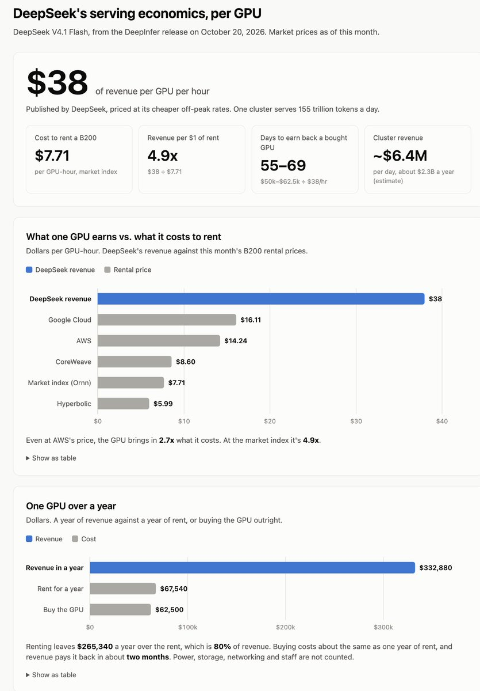
The actual drop:
- DeepInfer is what DeepSeek uses to actually sell inference via its API. It started as a fork of VLLM but has evolved to include custom kernels and Deepseek's own kernel libraries (FlashMLA, DeppGEmm, DeepEP, and DeepSelect)
- There is one model. Deepseek V4.1 Flash. It dropped Oct 17 - has 763B params. But each token only uses 6 'experts' out of 384 so it's cheap to run. It has a 1m context window
- DeepInfer supports both Nvidia Blackwell (SM100) and Huawei Ascend 950
- What is not included: the KV cache storage system. This means pragmatically you can't stand up a full copy of their API from this repo -- so even though they're described they're not shipped
- Numbers: 155 trillion tokens per cluster per day. Revenue per GPU hour: $38 (even at off peak). Output speed per GPU: 26k tok/s. Per the charts above this radically de-risks GPU purchases and rental economics
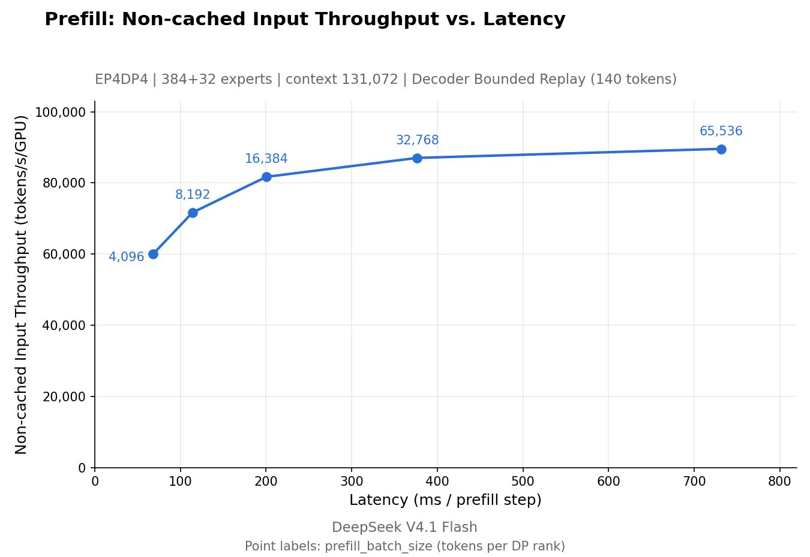
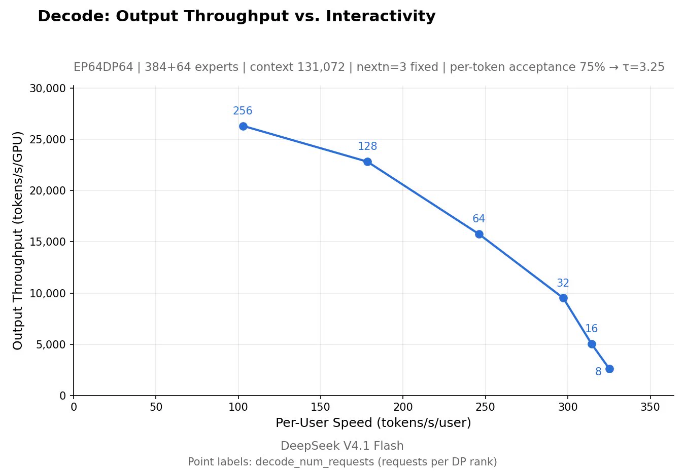
90% gross margins are great until DeepSeek tokens flood the market, and go to commodity levels.
The counterpoint to fears about DeepSeek erosion I think are somewhat encapsulated in the following example of a video game shooter simulating Citrini's Scorpion's breaking out of Anthropic's wet lab that DeepSeek 4.1 cooked up for $0.33 in 30 minutes in 3js.
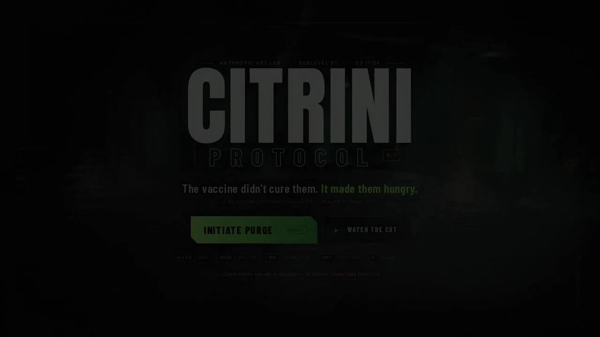
This is pretty good but when you compare it to tasteful slop like "Karen warfare" made by Claude (likely for $100s of dollars or more of spend at API rates) - doesn't really come close. The value of getting high value things right (especially in Enterprise context) likely results in a constant bid for the smartest model so I don't fully believe in the 'deepseek moment' hitting Lab demand quite yet especially bc there will be corporate hesitance to adopt DeepSeek due to government bans and their partnership with Huawei (one of the most severely sanctioned entities on earth). But the moment could certainly come - and Deepseek 4.1 flash now is good enough and cheap enough to take the Token Flood story seriously
The realistic timeframe for a Fable launch according to prediction markets is Halloween
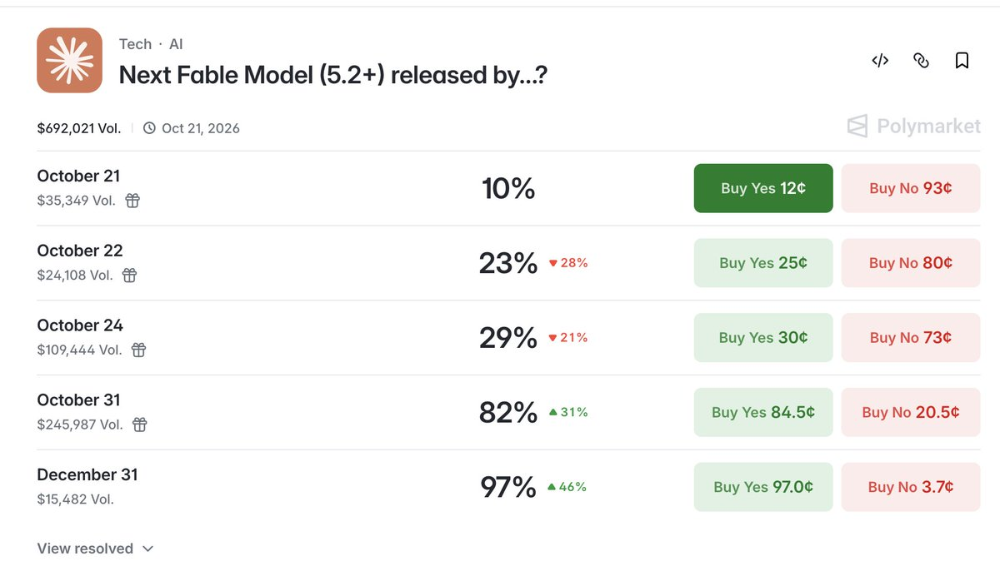
OpenAI likely does not have a big model release for some time. There's a rumored "Bel" model that is 10T+ parameter but it's unclear it will be available to the public. GPT 7 isn't anticipated until sometime in 2027 though we likely have another Astra upgrade by end of the year.
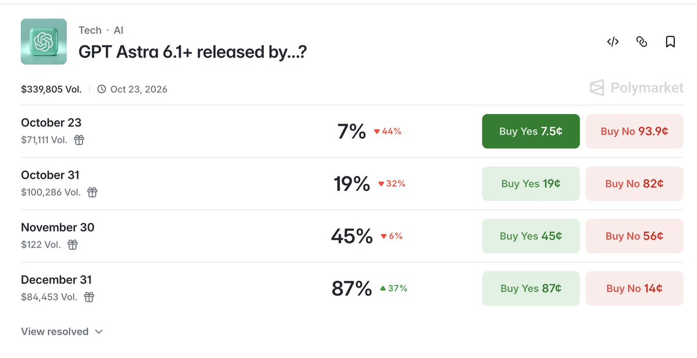
Where this leaves us is that Fable 5.5 has enormously high expectations
Q2: What is the state of Huawei and DeepSeek collaboration? What publicly traded companies benefit?
The problem with any argument about Chinese tech beneficiaries is that Chinese AI tech has continuously improved while Chinese AI stocks have continuously dropped. I'd argue that this is the essence of why there even are "DeepSeek Moments" - because the CCP is not focused on shareholder returns, but rather societal outcomes. And if such a narrative caught hold in the US, there could be substantial de-rating. "AI capabilities up, stocks down, with overvalued AI high flyers as an equity overhang" is exactly the recipe that's seen massive Chinese tech underperformance that could be coming to the US soon.
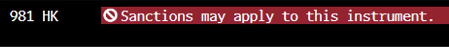
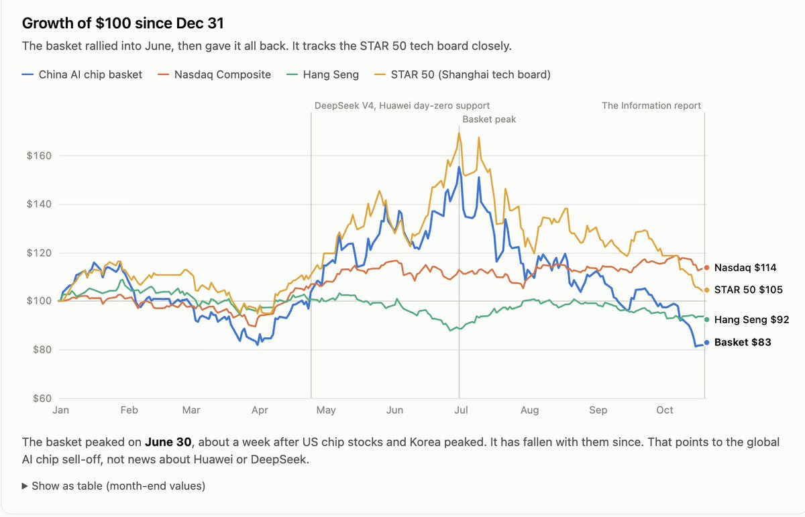
China always seems good from a technology perspective and yet the stocks rarely work. Over the past 5 years, in dollar terms $CQQQ has underperformed the Nasdaq by over 130%. Notably - Deepseek is private, and isn't in CQQQ.
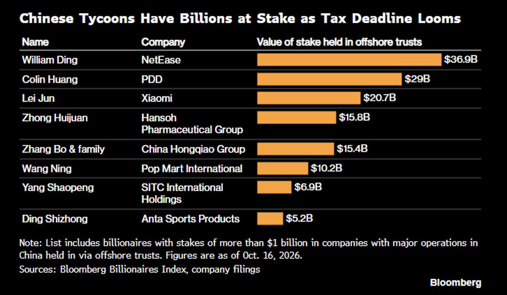
Furthermore - there was a bubble in Chinese AI stocks. Hua Hong was trading 165x forward at peak, Cambricon 113x and SMIC 68x. These valuations have now been cut in half. There was a hope for state funded buying that never came. There have also been insane expectations. Gigadevice saw H1 go +179% but didn't guide aggressively enough and sent the entire sector down 10%. On September 28 thre was a report that Beijing may approve purchases of Blackwell RTX 5500s which dropped all the Chinese chips 5%+ in a day.
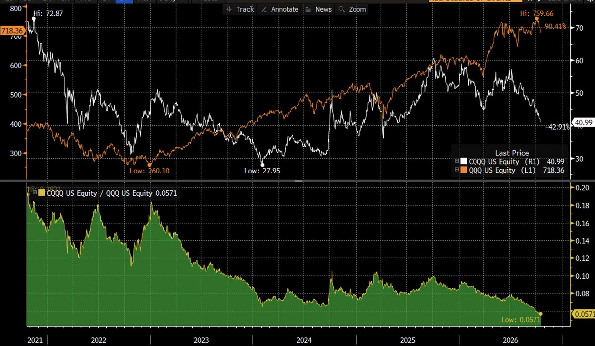
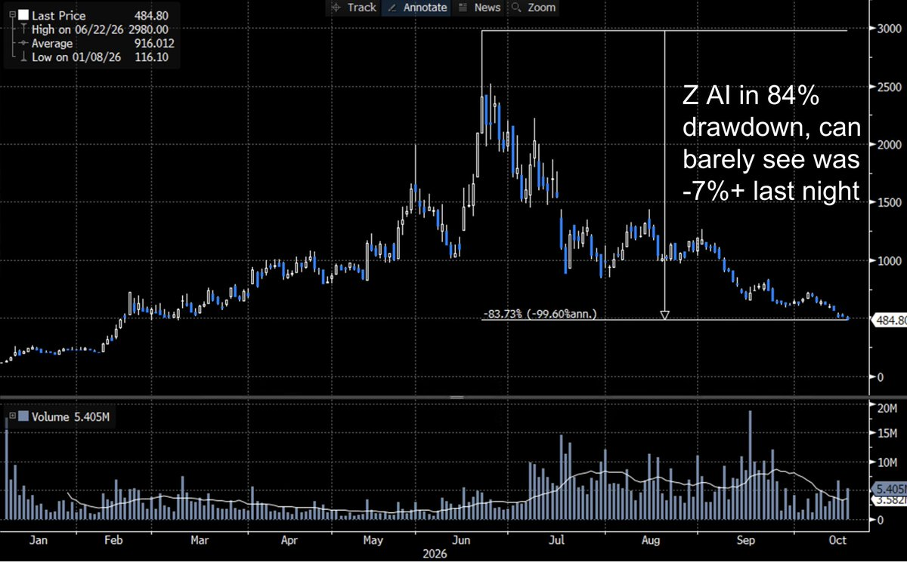
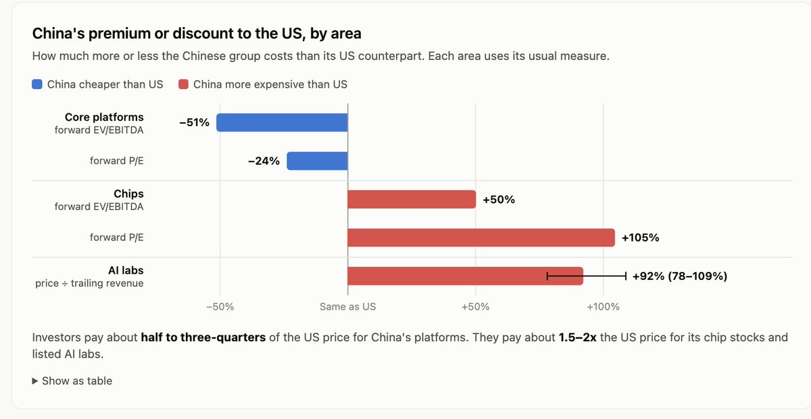
Huawei and Deepseek are co-designing an AI chip that might be able to handle frontier model training - threatening Nvidia in China. The Information noted that Deepseek will start pre-training on Huawei Ascend 950DT chips by Q4 - with Huawei engineers already working in DeepSeek offices. Ascend 960DT wil hit by Q1 of 2027.
DeepSeek and Huawei open sourced Ascend programming tools earlier this month (link)
Notably the 950DT will launch with 144GB of Huawei HBM (high bandwidth memory) further separating Chinese supply chain from US.
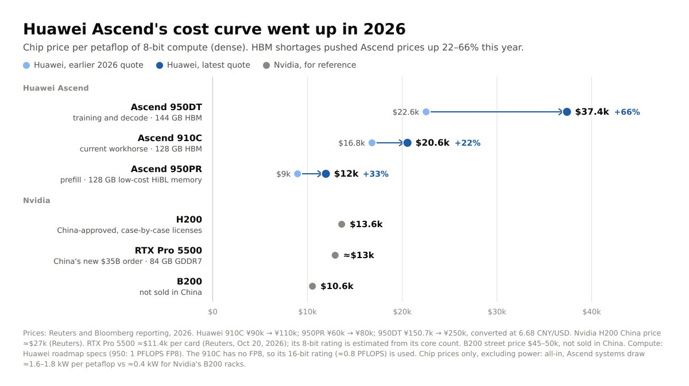
DeepSeek previously tried to train its R2 model on Huawei chips and failed because of structural problems - chip stability, interchip comms, so ended up finishin on Nvidia. In September, Bloomberg reported a 160k 950DT deployment in Mongolia but for inference, rather than training. And some rumors suggest 950DT produciton could be in 2028
The key thing to look out for is Ascend 960DT shipping in Q1 actually delivering training results. Deepseek will get most of the supply for its help
Demand was already insane going into this but it was more than priced in as the stocks dropped
- SMIC (0981 HK): orders are booked through Q4 and factories are 95% full Customer requests are "far beyond our original expectations"
- Hua Hong (1347 HK) - orders run 1.5-2x what it can make and factories are running close to flat out. 2027 is strong. No view on 2028
- Alibaba (BABA US) - industry agrees that "shortage of AI computing lasts until at least 2030". Cloud is +45%. AI products are $7.3b a year headed to $10B next quarter
- KingSoft (KC US) - AI cloud billings +82%, now over half of cloud revenue. Called chip shortage "a new norm" and is shifting inference to made in China Chips. Highlighted K3 and GLM as beating foreign models.
AI hardware returns are good
- BABA US - "AI spending pays back in about 3 years, headed to 2.5 and 2018 era V100 GPUS are still fully utilized.
- SMIC has 70% ebitda margins, and Kingsoft moving into operating profit
Q3: What are the nuances of expanded DeepSeek usage and memory? What's this about NAND or memory efficiency?
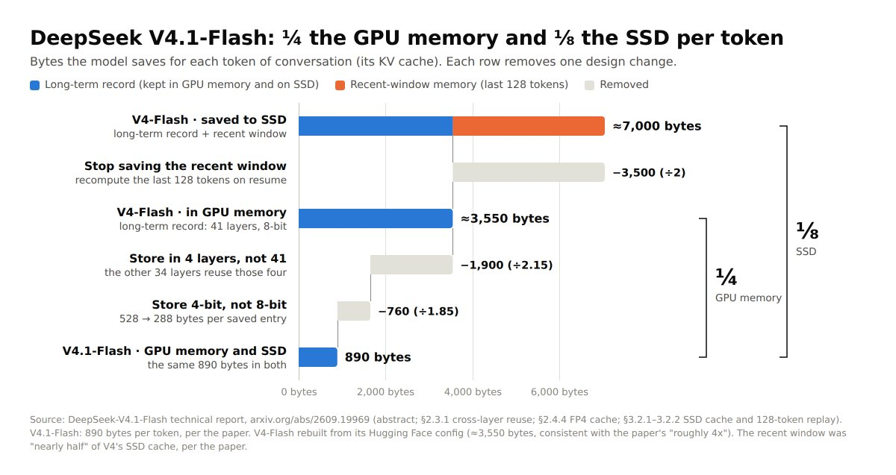
Memory is split into 3 components. You can think in an analogy:
- HBM3E = Desk. tiny. fast. expensive. answers you need right now sit here
- Server = Shelf. Big. Slow. Cheaper. Closer to desk.
- NAND = Warehouse. Huge. Slow. Cheap. Retrieving something from the warehouse is a mess
DeepSeek has a number of things that make it operate in this framework more effectively in a way that requires a lot less Desk space. The reasons for this and the scale are shown on the chart above
A series of design changes means that it uses 75% less memory per token.
Even though DeepSeek still thinks in HBM, its notes are small enough to park paused conversations/agent threads on cheap SSD for days and re-load them in milliseconds - shifting expensive HBM bills to NAND.
Memory stocks have already to some extent priced in bearish assumptions.
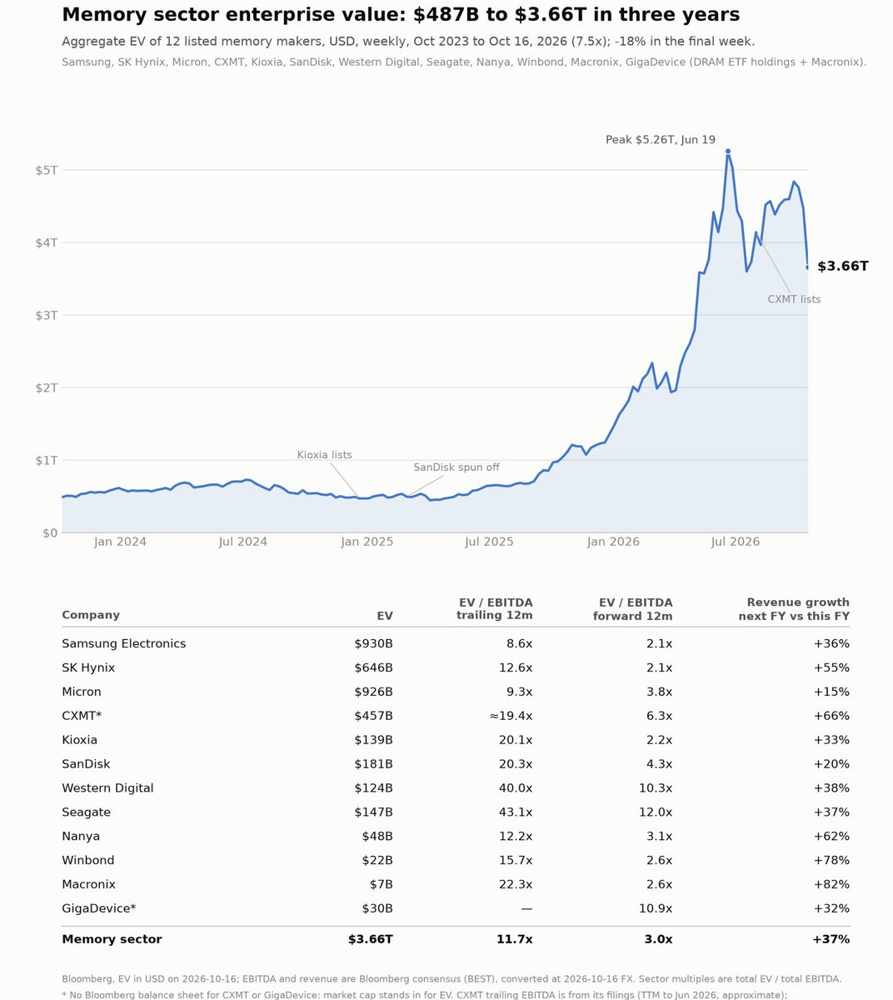
A world in which everyone used DeepSeek models would likely be fairly bearish for memory. The Chinese memory market is already in a somewhat bleak place due to bad CXMT results. CXMT is the big Chinese state-backed behemoth
On Friday October 16, CXMT posted results and dropped 8% to a post IPO low. It's down 26% since September 30th with big unlocks coming in Jan. BBG Q3 consensus of 64.1B Yuan of profit was massively missed with implied Q3 of 53-55B. This means net margins of 45-48% vs consensus of 54%. Revenue implied had a band of 115-120.
The silver lining of DeepSeek's Huawei partnership is that CXMT is the only domestic supplier of HBM memory so would likely benefit from a new market. CXMT remains extremely expensive vs other memory players - roughly 3x more expensive than Samsung for example. This is in part due to Chinese state support, but so far the Chinternet has shown us that this State Support often is somewhat indifferent or doesn't arrive even when prices drop
On balance usage of DeepSeek expanding benefits NAND and China exposed players more than it does HBM player so Kioxia, and CXMT would outperform if we enter a world where Chinese Open Source dominates.
Q4: What is the status of the US government ban on DeepSeek?
On October 19-20 the DHS ordered federal agencies to stop buying and remove products from DeepSeek. It also ordered removal of third party products and services using DeepSeek Implementations. Though it was made public just now, the ban has been in effect from the end of July. It can't cover the Department of Defense bc DHS can't tell the military what to do. Previously the Navy had banned Deepseek since Jan 2025. There's a bill in congress pending called "No Adversarial AI Act" that would bar agencies from buying or using AI from companies controlled by foreign adversaries.
China's commentary on the move was that this move "disregarded" the consensus reached btwn Xi and Trump and urged the US to correct its mistake and stop its unreasonable suppression of Chinese companies
On the flip side - there are some interesting signs of collaboration between China and the US. Lan Fo'an basically said that the global economy is in a bad place ('turbulent and complex') and called for AI as the growth driver with 'international cooperation'. The FT reported that Tencent, the maker of WeChat, signed a 5 year lease with Oracle for $7b in Southeast Asia - Tencent's biggest overseas lease.
Meanwhile - the US data center build continues apace from private companies (like Spacex) while Vice Premier Ding Xuexiang just made a "China National Data Group" that is going to spend $300 billion on data centers in China over the next 2 years.
Thus it's murky but AI is clearly an investment priority for both governments.
Q5: what about the cyber threat environment from DeepSeek?
One of the big fears as open source models evolve is that abliterated models are used by hackers to exploit vulnerabilities. Deepseek 4.1 flash abliterated is indeed a terrifying model and is now on HuggingFace
Top Cyber names have run to a $876B market cap - with the Cyber ETF (CIBR) +42% ytd. The big names we show below have a punchy valuation of 17.4x Sales (up from 13.7x last year)-- which is largely multiple expansion as actual next year growth is 23% expected vs 22% trailing. Put simply: people have max bid cyber stocks on the AI hacking narrative but it's not clear that people are actually hyper accelerating their IT budgets to avoid attack. This likely informs some of the recent pullback
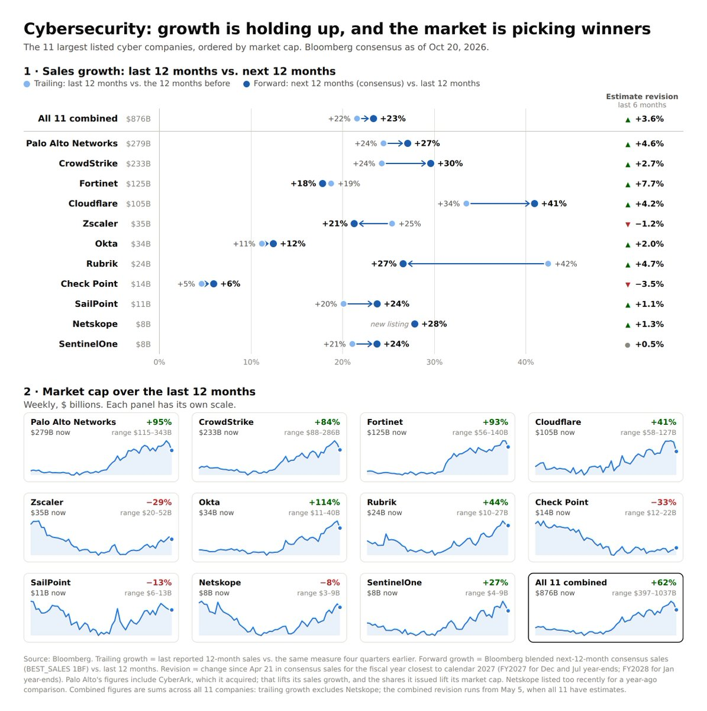
Management obviously feels great but isn't really talking much about DeepSeek
- Dario is fear monger in chief. Arora from PANW "I spent 8 years trying to convince people cyber security is important. Dario did it in 1 week. Mythos has been more useful for me as a marketing tool than anything I did for 8 years." - and he's saying he's spoken to 2000 companies at the CEO/CIO and security chief level
- But there's exponential decay in threat discovery. There was an initial burst of vulnerability discovery but it's now leveled off . PANW found 1,200 vulnerabilities in its own system and now are "finding a few every month like we used to find before Mythos". The super bear case here is that 'perfect software' gets written with AGI that won't be easily exploited so long as there's a sufficient enough gap btwn closed and open source
- Fortinet is the bear case. 52% surge in product revenue. But unit growth is falling to in the single digit range. And management elaborated it's "guiding one quarter at a time". This is a pretty wild thing to say for a company that has a stock +115% ytd
- AI security is still early innings. PANW has a real time AI security product that's at $100m run rate - and in-line security for Claude/Codex aren't possible bc there aren't hooks
- Per Arora (PANW) Agentic traffic is up 800% and the compute build out sends 6x more traffic in 5 years.
Broadly - DeepSeek is barely on the radar of public companies, only having been mentioned in passing in last quarter's transcripts by AI infrastructure companies such as Oracle / Digital Ocean as it pertains to their product offerings. It's clearly on the radar of the government and Anthropic.
I personally don't like buying the cyber names up here bc they are consensus and the "exponential decay" in threat discovery could cut both ways. If mythos writes perfect code, perhaps there are *less threats* over time not more and you're paying peak multiples fading that with some troubling signs of deceleration or flat growth when business should be accelerating hard.
Q6: What is incremental on Spacex (+8% AH) and SMCI (15% AH) Earnings?
SpaceX earnings were just absurd. Elon decided to Guide 2027 annual recurring revenue from $500B- $1T (why not).
Mot important points:
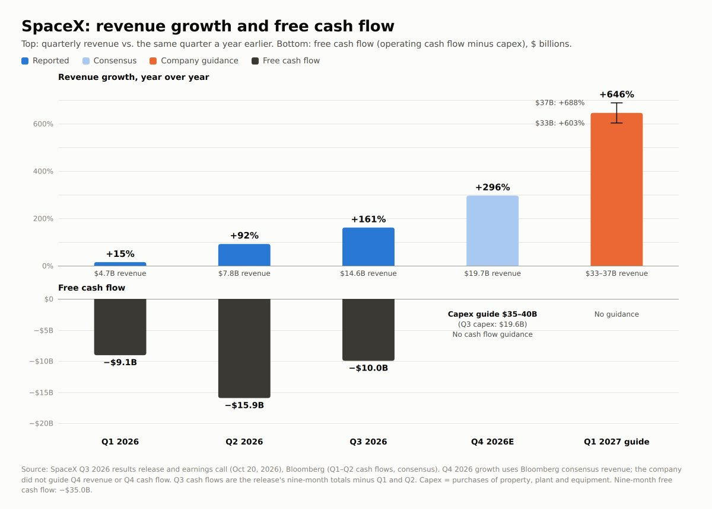
- Capex was completely berserk - Q4 Capex guide of $40b is 3/4 as much as the company did in the trailing 12 months $55b. Last Calendar year's capex was $20.7b
- SpaceX is reporting under one year compute payback and pricing above $50 per watt. Renewals are coming in at higher prices and old H100s rent for more than when they were new
- Optically the SpaceX guide sees 65% QoQ growth into Q1 which is faster than Anthropic's Q3 which is arguably a headwind as a $2T valuation is a race to have the fastest growth
- SpaceX said "We could rent out our compute several times over"
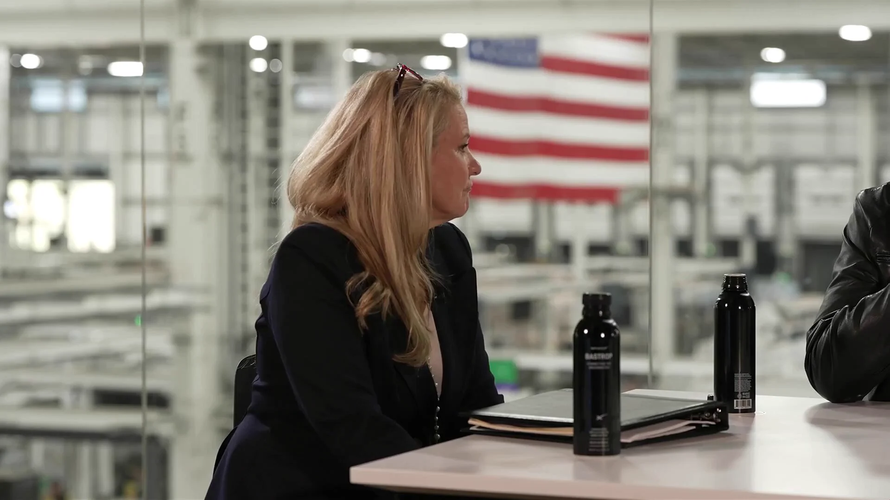
- In the short term SpaceX this should de-risk some of the data center FUD but this begs the question, if inference is decelerating, what if Elon builds all these things for no reason (a problem for tomorrow, or the day after tomorrow perhaps)
- Almost all of the Q1 2027 revenue guide which is going to +646% year over year is compute which is part of the $100B annualized cloud revenue number
- Elon said Tesla merger uncertain
- SuperMicro (SMCI) put up a massive pre announcement. In June customers couldnt take delivery bc their data centers lacked cooling/power. Now that bottleneck has cleared and customers took far more servers than the company planned for. Neoclouds and other buyers aren't pulling back
- Analysts feared that June's high margin was a fluke - and margins would collapse. This did not happen
- SMCI likely needs to issue equity or debt to fund the growth
- SMCI is yet another piece of evidence that GPU renters will take everything and are doing at an accelerating rate
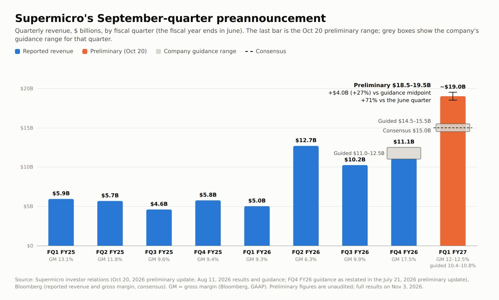
Winners and Losers
The following takes the most recent transcript of the company and scores it with the "Token Flood" points in this article to objectively apply a benefit or loss from the acceleration of DeepSeek inference, inference cost pressure, and a joint chip launch with Huawei
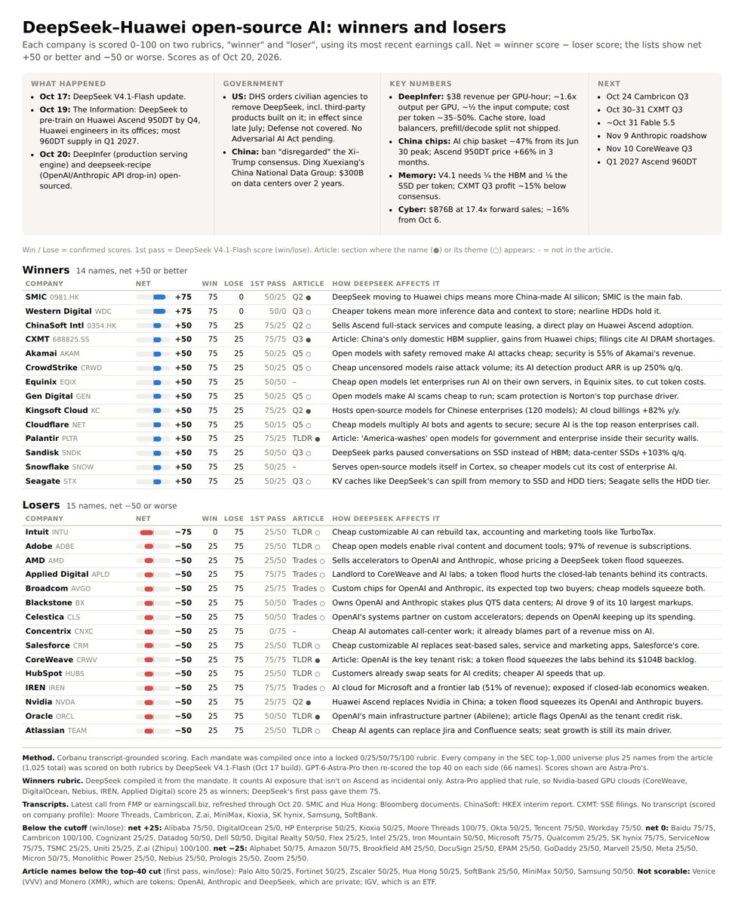
Putting it All Together
Seems we are set for a near term, rather violent bounce on the AI credit risk complex that is already well under way in Korea and will find out within 11 days if Fable can save the Lab trade before the token flood hits. Regardless we know what the story is. Curing Cancer. "Better businesses than pure inference." "Accelerated threat environment. National security." "RSI". If Fable 5.5 hits and seems differentiated enough from dirt cheap deepseek tokens, then OpenAI's $1.4T round gets done and the credit risk complex goes parabolic. If it doesn't - then you end up with AI investments being grouped with crypto in the Trump complex, and the USA entering an extremely Chinese time of its life
More commentary
All commentary
Intel, Sandisk, AWS, Binance. Shake it up. Add some Geopolitics. Why not?
Intel which is now down 29% this morning changed the story from "2027 is funded by operations" to that it's probably funded by debt and equity…

One Last Midnight Opting Out of a Raw Deal: Long Coins Short Stocks
Cryptocurrency is running higher. Stocks are stalling. I think it's time for the big run in coins vs equities and the crypto market now has the infra…

Is CoreWeave Going to Die
No. Coreweave I do not think is going to die. I think Anthropic roadshow will do better than expects due to Fable 5.5 lifting sentiment on Lab…